Ang cute mo dito oh!!! Gusto kita i-kiss ng madami sa mukha at lips mo huhuhuhuhu...Pa-kiss nga ako asawa ko.
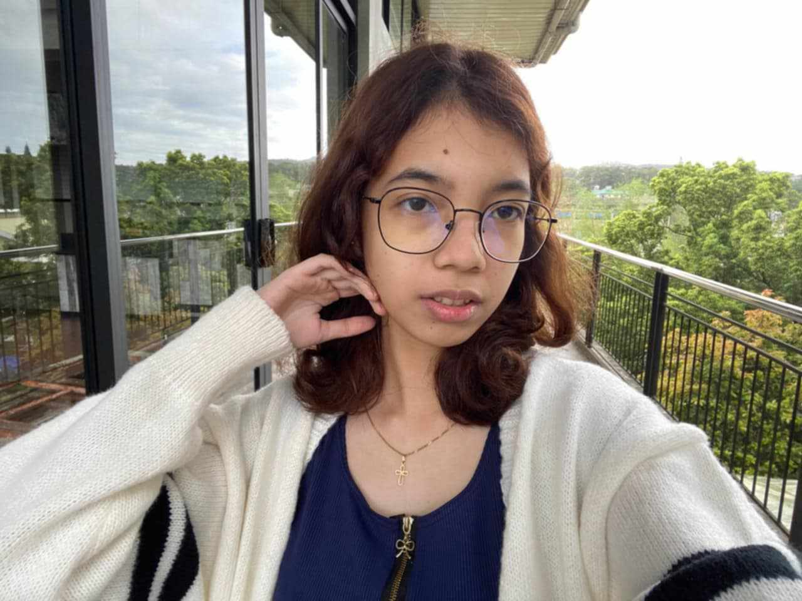
DAPAT SINAMA MO TALAGA AKO SA GALA MO DITO EH T_T IIYAK AKO IH HUHUHU GANDA MO ASAWA KO
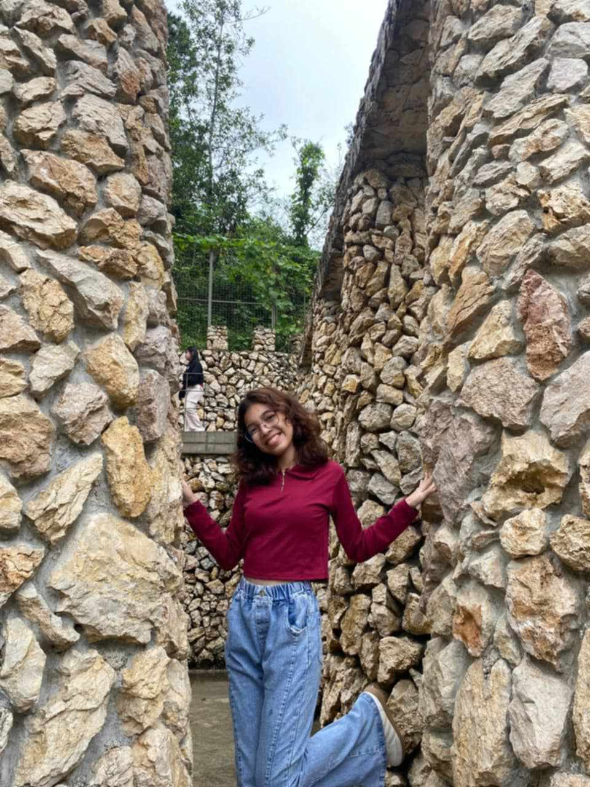
HAPPY VALENTINE'S MY BABY GIRL!
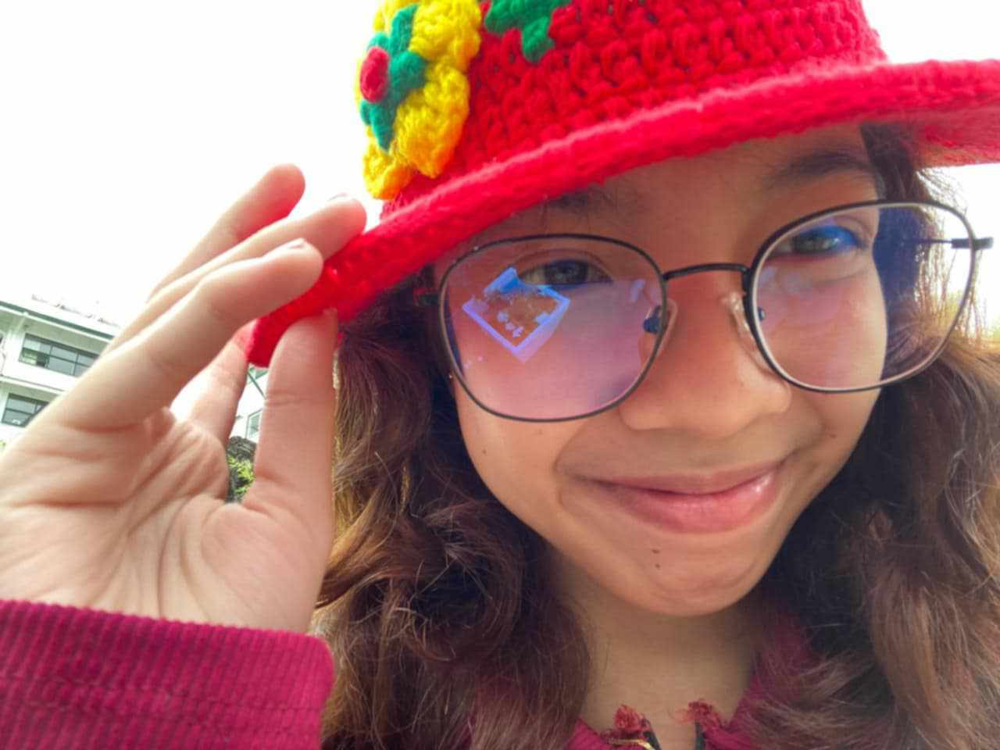
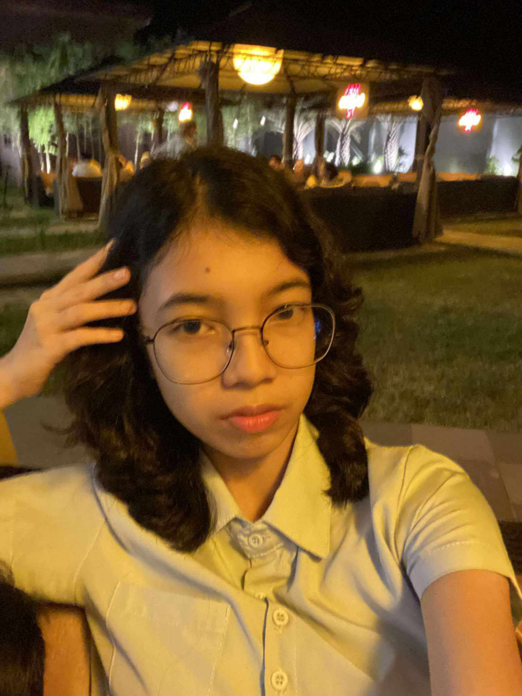
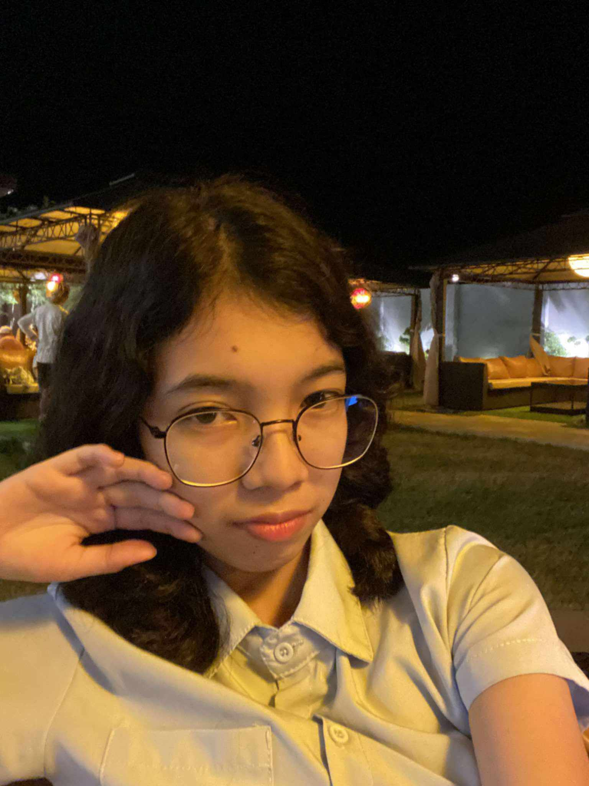
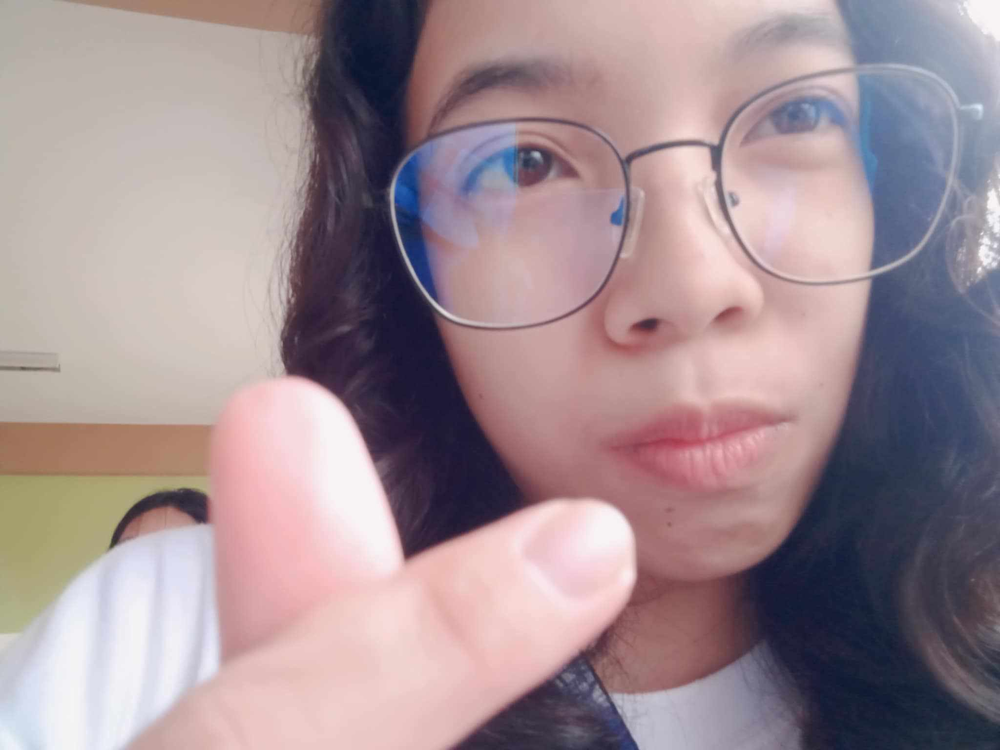
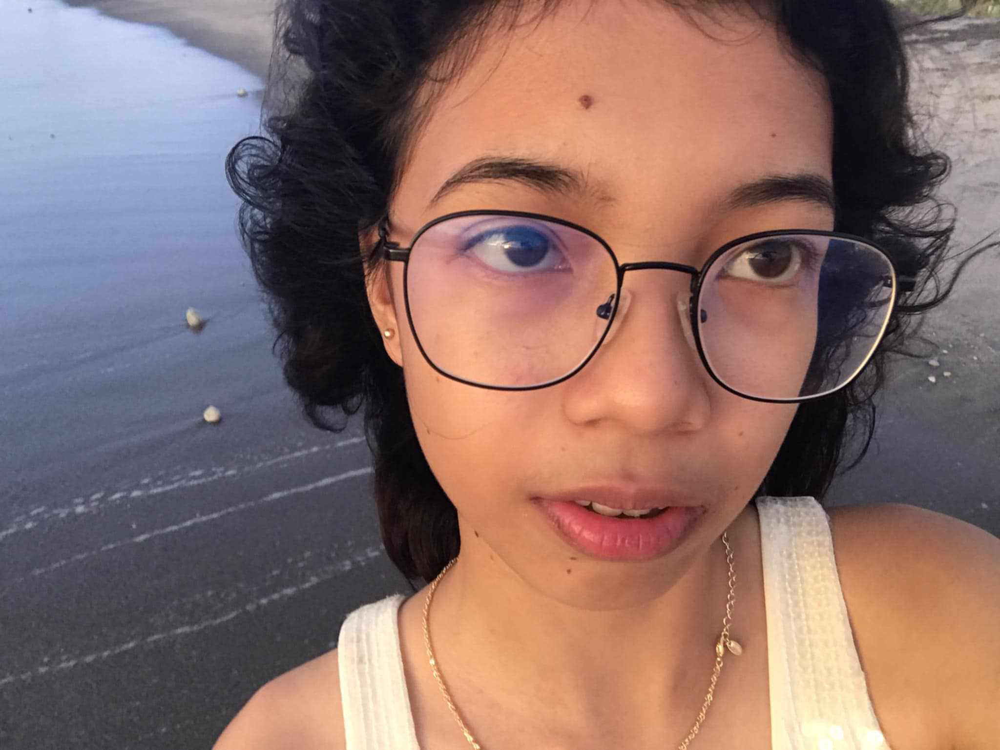
Hello Love! Happy Valentine's Day for us! I want to thank you for staying with we always even though I'm so makulit and matigas ang ulo hehe. Thank you Asawa ko! You know, I can't express how proud I am to be your Boyfriend. Your're the best gift the world has given me. You mean the world to me, my love. I'm so glad we met each other not online but same place and same vibes HAHA. Thank you for everything, my wife! Now, I just want to make you the happiest you've ever been. I want to make you feel safe and loved by me. I want you to know that you can come to me when you're not okay, when your eyes are filled with tears, don't worry because you got me! I'm always here for you, my baby girl. I love you so much at your best and at your worst. I wish you all the best, my love! I'm so happy because we get to celebrate our second valentines again together!! I just want to thank Lord because if it's not for him we won't meet hehe. Also, don't forget to take care of yourself, okay? Mag-sasama pa tayo kaya alagaan mo muna ang sarili mo kasi ako na mag-aalaga sa'yo soon! I love you so mucH!!!!!!!!!!!!!!!!! MWAAA MWAAAA.

 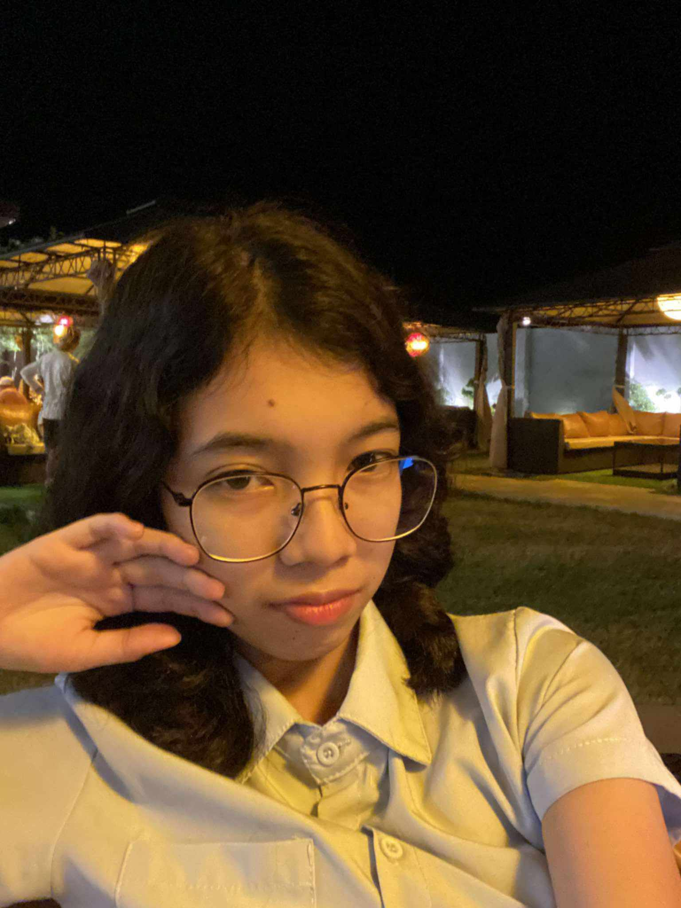
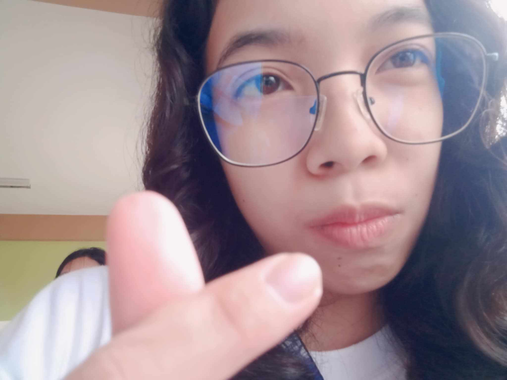
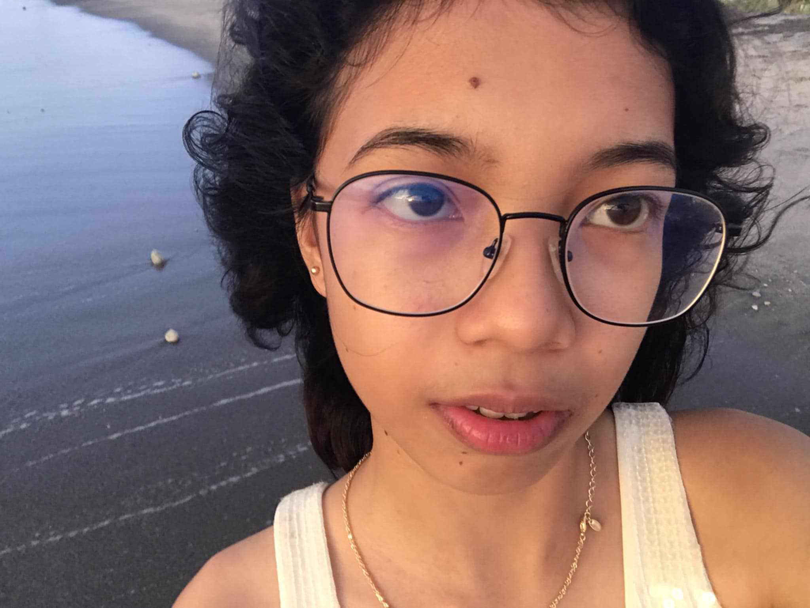
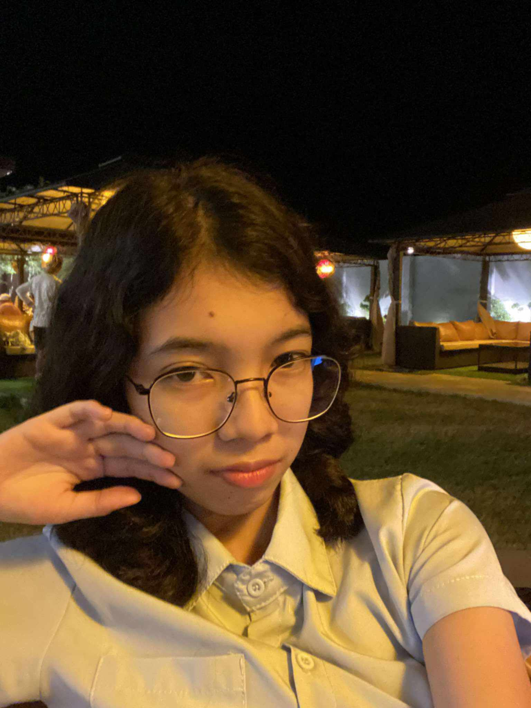
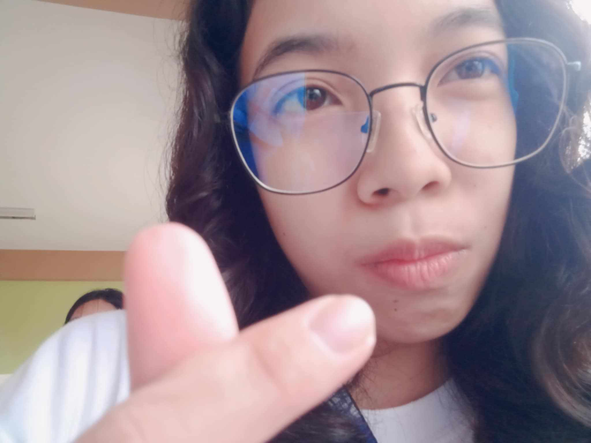
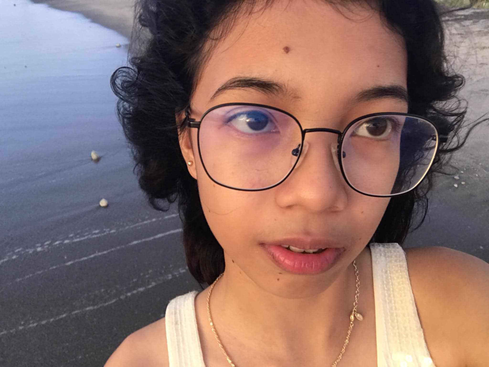